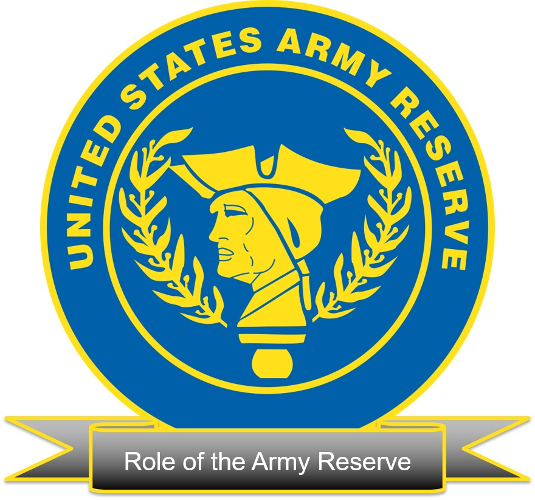
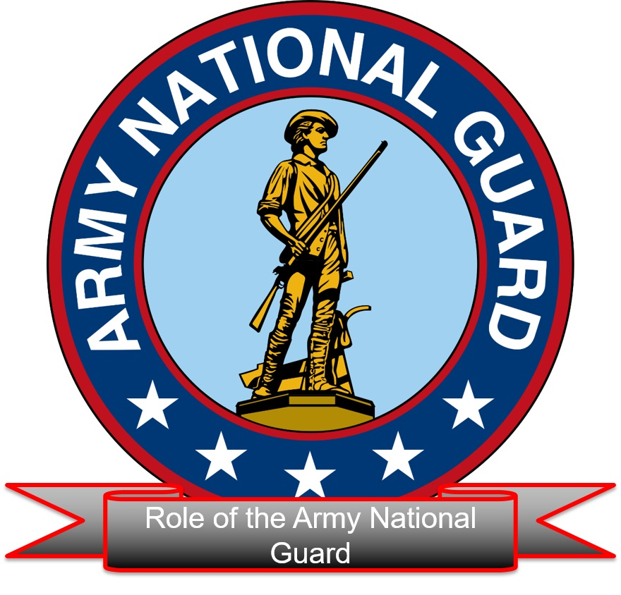

Senior Leader Course
S305: Active and Reserve Component Capabilities
* * *
Table of Contents
- Five Capabilities 3
- Publish & Process 4
- Scope 5
- Learning Objective 6
- Assigned Readings 7
- Our Service 8
- How the Army Operates 9
- Army Responsibility 10
- The Roles of the Army 11
- The Core Competencies 14
- The Role of the Army Reserve 17
- The Role of the Army National Guard 21
- Army Guard Snapshot 25
- State Partnership Program (SPP) 26
- Summary 28
Use five minutes to answer the information below on a 3x5 card or sheet of paper. Once complete, place your 3x5 card or sheet of paper off to the side.
In your own words, list five capabilities for each component.
-
Active Army:
-
Army National Guard:
-
Army Reserve:
Answer the question(s) in your journal. Good note taking during the lesson can aid in effective reflection and retention of material while journaling.
-
What is the importance of knowing the three components capabilities?
-
How different are the capabilities of each component?

Scope
At the end of this two-hour lesson, learners will have investigated active and reserve component capabilities. As a result, learners will have a better understanding of the capabilities of the total Army force.
Answer the question in your journal before selecting further analysis button.
List the Roles of the Army
The Roles of the Army
-
Shape Operational Environments
-
Preventing Conflict
-
Prevail In Large–Scale Ground Combat Operations
-
Consolidated Gains
Roles of the Army Explained
Shape Operational Environments
The Army provides unique forces with capabilities to shape operational environments. Shaping operational environments
allows combatant commanders to reassure partners and deter aggression while establishing conditions that support the
potential employment of joint forces. Army regionally aligned forces—including special operations units, Army Reserve
units, and Army National Guard units—assist partners with internal defense and develop the capabilities needed to deter
adversaries and defeat enemies. Army forces further develop relationships with multinational partner land forces, share
intelligence, strengthen their security forces, increase cultural awareness, and conduct bilateral and multilateral
military exercises. Through efforts such as the State Partnership Program, Army National Guard and Reserve units supply
unique and dual–trained Soldiers with special skills obtained as civilians to assist in medical and engineering activities,
disaster preparedness, critical infrastructure management, and resource protection. Together, these efforts allow the Army
to maintain a global landpower network that is critical in shaping operational environments and winning wars. Army forces
conduct shaping operations through the day–to–day actions of its Service component commanders, trainers, advisors, and
logistic activities as specified under Title 10, USC and support to Title 22 and Title 50, USC.
Ref: ADP–1, para 2–19
Preventing Conflict
Preventing conflict includes all activities that deter adversary military actions which threaten allies or partners and
deny them the ability to achieve objectives counter to U.S. interests. A well–trained, credible, and capable Army reduces
the risk of aggression by adversaries because it raises both the risk and potential cost of military action to their
forces. Moving ready and trained Army forces into a region tells adversaries that the United States is prepared and willing
to protect its interests. Partner nations under external threats understand that introducing U.S. forces alters the regional
military balance of power in their favor and bolsters their resolve to resist aggression. Multinational partners and
adversaries recognize that Army forces—combined with the nation’s joint air, maritime, and space–based forces—are dominant
and therefore are a deterrence to armed conflict. This role meets the objectives described in the National Military Strategy.
Ref: ADP–1, para 2–20
Prevail In Large-Scale Ground Combat
The Army’s capability and capacity to conduct large–scale ground combat is unique and foundational to its other roles.
Only the Army has the capabilities necessary for sustained ground combat anywhere in the world. The credibility inherent
in its ability to conduct large–scale ground combat as part of the joint force is a critical part of U.S. conventional
deterrence. It is a primary source of assurance to friendly nations and an important factor in worldwide stability. The
U.S. Army conducts large–scale ground combat as part of the joint force. When it deploys and fights, the Army both enables
and is enabled by the other Services when they perform their roles. An Army that can defeat any enemy worldwide requires
professionally committed leadership, well–equipped and trained units, and proficiency in the conduct of joint and
multinational operations. Maintaining the readiness necessary for large–scale ground combat is a difficult and continual
process that consumes significant time and resources. Readiness for large–scale ground combat operations saves lives.
Ref: ADP–1, para 2–21
Consolidated Gains
Operations to consolidate gains make temporary operational successes enduring and set the conditions to facilitate the
transition of control over territory to legitimate authorities. Army forces enable the joint force commander to capitalize
on operational success by following through to ensure sustainable conditions on the ground. Consolidation of gains is an
integral part of winning armed conflict and is essential to retaining the long–term initiative over determined adversaries.
Army forces reinforce and integrate the efforts of all unified action partners when they consolidate gains. Operations serve
a higher national purpose in support of U.S. interests and are planned and executed to support that purpose at each echelon.
A clear understanding of the higher purpose of the mission and operational environment determines what must happen to
consolidate gains during the course of operations. How well ground forces consolidate gains determines in large part how
enduring the results of operations will be. Effectively consolidating gains increases options for national leaders and
contributes to decisive outcomes.
Ref: ADP–1, para 2–22
Answer the question in your journal before selecting further analysis button.
What are The Core Competencies?
The Core Competencies
-
Prompt and Sustained Land Combat
-
Combined Arms Operations
-
Special Operations
-
Set and Sustain the Theater for the Joint Force
-
Integrate National, Multinational, and Joint Power on Land
The Core Competencies Explained
Prompt and Sustained Land Combat
Prompt and sustained land combat is the assigned function of the Army, directed both by Congress in Title 10, USC, and by
DODD 5100.01. This function is the foundation from which the Army builds its ability to win in combat. It is the primary
function for which the Army organizes, trains, and equips forces. Prompt land combat is what requires the Army’s
expeditionary capability: the ability to deploy on short notice task—organized forces capable of immediately conducting
operations upon arrival to austere locations. Sustained land combat requires the Army to campaign with the power to
conduct extended operations and continuous consolidation of gains necessary to achieve the objectives set for the Army
by the joint force. Sustained land combat spans the range of military operations. It requires a force that can sustain
its efforts for as long as necessary and can adapt to unpredictable changes in an operational environment.
Ref: ADP–1, para 2–25
Combined Arms Operations
All operations are combined arms operations. Combined arms is the synchronized and simultaneous application of arms to
achieve an effect greater than if each element was used separately or sequentially (ADP 3–0). Combined arms includes Army
capabilities and joint, multinational, and other unified action partner capabilities. Combined arms operations integrate
leadership, information, and each of the warfighting functions. Used destructively, combined arms integrate different
capabilities so that responding to one capability makes the enemy vulnerable to another. Combined arms multiply the
effects of Army and joint capabilities in operations. They require highly trained Soldiers, skilled leaders, and
integrated information systems. Commanders synchronize combined arms capabilities using command and control to employ
combat power to their best advantage. Combined Arms Operations will be further discussed in S307.
Ref: ADP–1, para 2–26
Special Operations
Special operations require unique modes of employment, tactics, equipment, and training. Army special operations forces
provide combatant commanders with precise lethal and nonlethal capabilities. These capabilities include special warfare and
surgical strike operations in hostile, denied, or politically sensitive areas. These operations may be time sensitive,
clandestine, low visibility, and high risk. Special operations forces possess uniquely assessed, organized, trained, and
equipped Soldiers. The interdependence of special operations and conventional forces, gained by the right mix of complementary
and reinforcing capabilities, enhances success throughout the range of military operations across the competition continuum.
Ref: ADP–1, para 2–31
Set and Sustain the Theater for the Joint Force
The Army’s ability to set and sustain the theater is essential to allowing the joint force to seize the initiative while
restricting an enemy force’s options. Setting the theater for the joint force includes the establishment of access and
infrastructure to support joint force operations. The Army possesses unique capabilities to establish and maintain vital
infrastructure and support the joint force commander. These capabilities include intelligence support; communications; port and
airfield opening; logistics; ground-based air defense; chemical defense; and reception, staging, onward movement, and integration.
Sustaining the theater for the joint force includes theater sustainment and meeting executive agent responsibilities. Maintaining
critical infrastructure—as well as sustaining joint forces, unified action partners, and multinational forces—is accomplished
through the Army’s support to other Services, executive agent, and Title 10, USC, requirements. The Army uses Army Service
component commands, forward deployed forces, and rotational forces to develop, sustain, and operate this theater structure.
Ref: ADP–1, para 2–32
Integrate National, Multinational, and Joint Power on Land
The Army has the largest number of headquarters that are joint task force headquarters capable and can combine all elements of
national, multinational, and joint power. Army headquarters are designed to be the core components that integrate unified action
partner capabilities into a Service headquarters or rapidly transition from a Service headquarters into a joint or multinational
joint task force or land component command. These headquarters provide the capability to plan, prepare, execute, and assess joint and
multinational operations. Army forces support partners with situational understanding, security, and logistics. Army forces ensure
combatant commanders possess the ability to reinforce and sustain land forces rapidly through forward positioning, theater
infrastructure capabilities, and the use of prepositioned equipment and supplies. Army headquarters and forces help impose order to
chaotic situations and synchronize plans, programs, and efforts necessary to accomplish the mission.
Ref: ADP–1, para 2–33
Answer the question in your journal before selecting further analysis button.
How much of the Army Reserve makes up the Army’s organized units?
Further Analysis
Possible Answer:
Ref: ADP 1, para 1–11
The Army Reserve makes up only about one–fifth of the Army’s organized units, but it provides one–half of the Army’s sustainment units and one–fourth of the Army’s mobilization base–expansion capability.
Army Reserve

The Army Reserve is under the command of the President and serves as a federal military force. Elements of it mobilize
when required. Most Army Reserve Soldiers serve for a period in the Regular Army and then elect to continue their service
in the Reserve. The Army Reserve makes up about a fifth of the Army’s organized units, but it provides a half of the Army’s
sustainment units, a fourth of the Army’s mobilization base–expansion capability, and most of its civil affairs capacity. The
Army Reserve is also the Army’s major source of trained individual Soldiers for strengthening headquarters and filling
vacancies in the Regular Army during a crisis. Many Army Reserve Soldiers are also civilian professionals, such as nurses,
dentists, and computer technicians, who augment critical Army specialties. Similar to Army National Guard members, a small
number of Army Reservists are full–time active duty.
Ref: ADP–1, para 1–11
Answer the question in your journal before selecting further analysis button.
What is the role of the Army National Guard Component?
Further Analysis
Possible Answer:
Ref: ADP–1, para 1–9
The Army National Guard has a dual role based on the Constitution. Its first role is that of a state military force. Its second role is as an operational reserve for the Regular Army. Each state, the U.S. territories (Guam, Puerto Rico, and the Virgin Islands), and the District of Columbia have Army National Guard units totaling 54 state and territorial National Guards. Army National Guard forces remain under the command of their respective governors until mobilized for federal service. Each state or territory Army National Guard has an adjutant general—a general officer appointed by the governor—who serves as its uniformed leader. The governor can order the Army National Guard to state service since it is a state military force. The Army National Guard responds to natural disasters and other domestic emergencies many times each year. While serving their states, these Soldiers are subject to civil laws and their states‘ Codes of Military Justice. A governor can use the Army National Guard of the state for law enforcement, which is something that federal military forces cannot perform except under special circumstances. A small number of Army National Guard Soldiers are on full–time active duty, a duty status called ”Active Guard and Reserve.”
Army National Guard

When ordered to active duty, Army National Guard Soldiers become subject to the Uniform Code of Military Justice and fall
under the command of combatant commanders. Army National Guard forces are similarly organized and equipped as units in the
Regular Army and Army Reserve. The Department of the Army provides their equipment, provides much of their funding, and is
responsible for assessing their combat readiness. However, states retain latitude in recruiting, manning, and training.
Ref: ADP–1, para 1–10
Answer the question in your journal.
How will the understanding of the component capability of the Army, Army Reserve, and National Guard assist you in future operations?
Your facilitator will provide instructions for The Army Learning Activity.